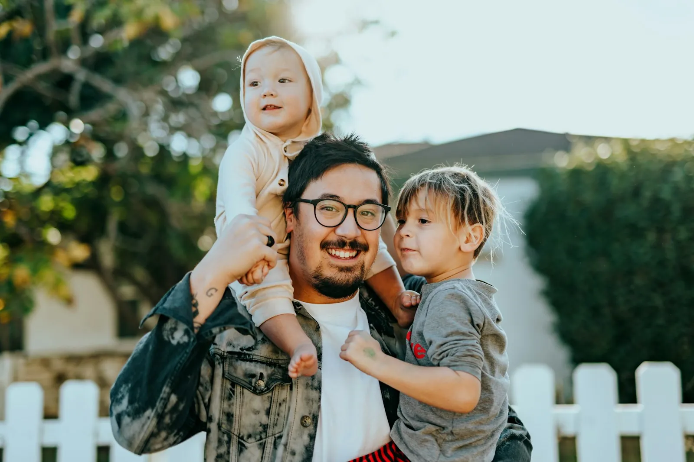
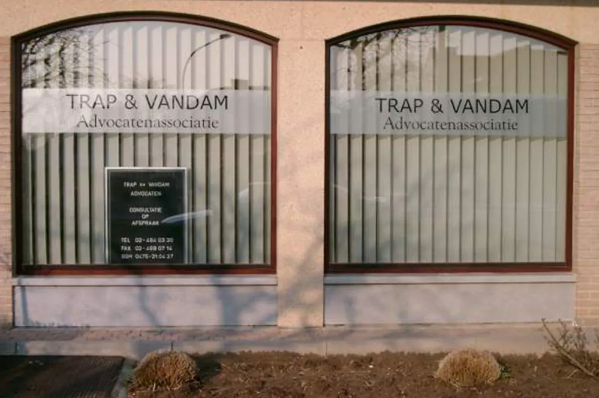
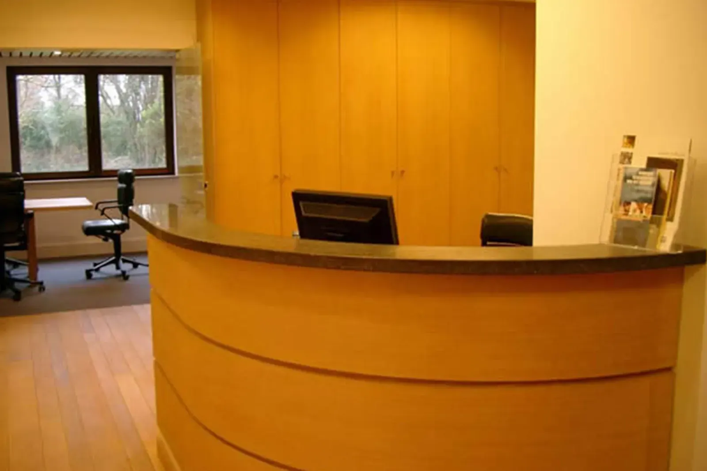
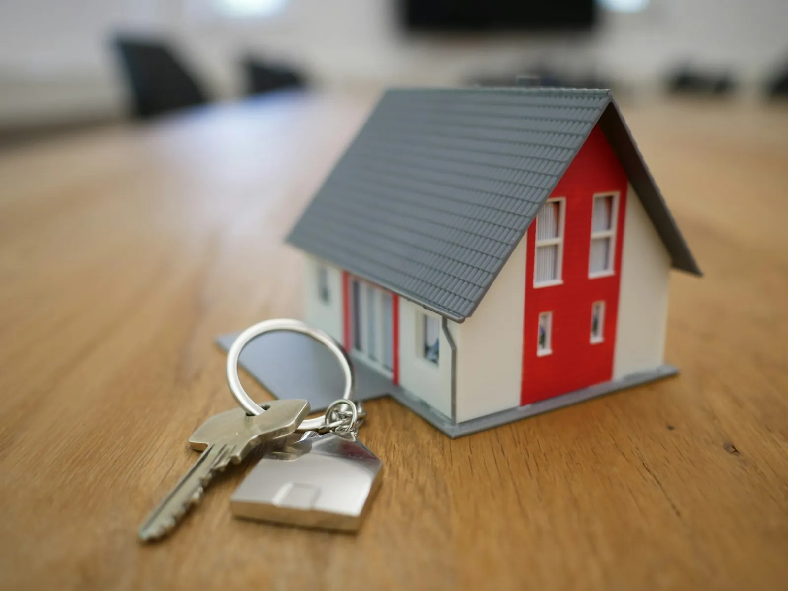
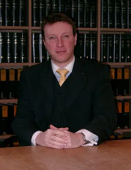
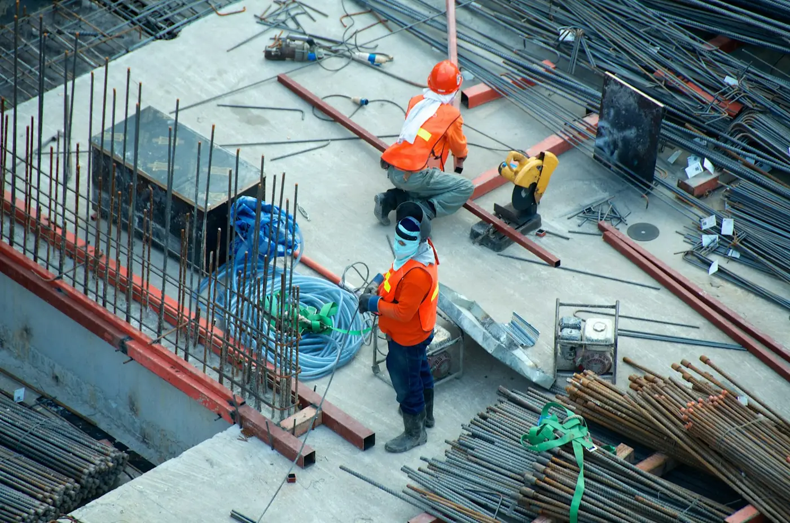

Familie en echtscheiding
Echtscheiding, alimentatie, bezoekrecht en jeugdrecht. Mr. Trap is erkend bemiddelaar in familiezaken.
bij mr. Trap
Bij Trap & Vandam belandt uw dossier niet bij een stagiair. De vennoten volgen het zelf op, van het eerste gesprek tot de laatste brief. Voor particulieren en voor ondernemingen, aan een scherp tarief.


Wel juridische begeleiding van hoog niveau, aan een scherp tarief.
Een digitaal ingericht kantoor en een no-nonsense aanpak houden de kosten laag. Wat u betaalt, gaat naar het werk aan uw dossier en naar niets anders.
Elke advocaat heeft eigen voorkeurmateries. Zo komt uw vraag meteen bij de juiste persoon, en betaalt u niet voor iemand die zich nog moet inlezen.

Echtscheiding, alimentatie, bezoekrecht en jeugdrecht. Mr. Trap is erkend bemiddelaar in familiezaken.

Woninghuur en handelshuur, geschillen met een aannemer, mede-eigendom en erfdienstbaarheden.
Een ongeval op de weg of schade aan uw eigendom. Zowel voor wie schade lijdt als voor wie ze veroorzaakte.

bij mr. VandamHandels-, economisch en vennootschapsrecht. Overeenkomsten laten opstellen of een geschil over een bestaand contract.
Wordt u verdacht van een strafbaar feit, dan hebt u een sterke verdediging nodig. Mr. Vandam neemt die zelf op.

Arbeidsrecht en sociaal recht, vreemdelingenrecht, internationaal privaatrecht en administratief recht.
Ook voor bank- en kredietrecht, waar het kantoor de kant van de consument kiest, en voor jachtrecht kunt u bij mr. Vandam terecht.
Gespecialiseerde kennis en jaren praktijkervaring. Wie uw dossier opneemt, houdt het ook bij zich.
Een gesprek van ongeveer een half uur. U legt uit wat er speelt, en u hoort welke oplossingen er zijn voor uw specifieke probleem. Daarna beslist u zelf of u verder wilt.
Op kantoor in Dilbeek, op een moment dat u past. Ook 's avonds, tot 19 uur.
Samen bepaald, met oog voor de moeilijkheid, de hoogdringendheid, het belang en de omvang van uw zaak.
U weet van bij het begin hoe het ereloon berekend wordt, en u kunt altijd vragen wat er al verschuldigd is.
Gemiddelde score uit 11 reviews op Google
“Al meer dan twintig jaar een zeer tevreden klant, zowel privé als zakelijk.”
“Eerste gesprek gehad. Heel competent en vriendelijk.”
| Maandag | 09:00 tot 19:00 |
| Dinsdag | 09:00 tot 19:00 |
| Woensdag | 09:00 tot 19:00 |
| Donderdag | 09:00 tot 19:00 |
| Vrijdag | 09:00 tot 19:00 |
| Zaterdag | Gesloten |
| Zondag | Gesloten |
DIEen woordje uitleg van Stijn
Ik maakte deze demo voor u om te tonen wat er kan. Na een kort gesprek maak ik er iets veel persoonlijkers van, helemaal naar uw wens.
Vrijblijvend. Ik kom langs of we bellen.
Op maat, op uw eigen domein.
Geen voorschot. U betaalt pas als alles klaar is.
Hosting, domeinnaam en kleine wijzigingen, zoals nieuwe openingsuren.
Omdat een voorbeeld meer zegt dan een mail. Zo ziet u meteen wat er kan, en het kost u niets.
Nee. Het gesprek is vrijblijvend. Vindt u het niks, dan is het daarmee gedaan.
Na ons gesprek staat uw site binnen 10 tot 14 dagen online.
Zeker. Uw domeinnaam kan gewoon blijven, de nieuwe site komt in de plaats van de oude.
Nee, dat doe ik op basis van ons gesprek. Eigen foto's zijn mooi meegenomen, maar niet nodig om te starten.